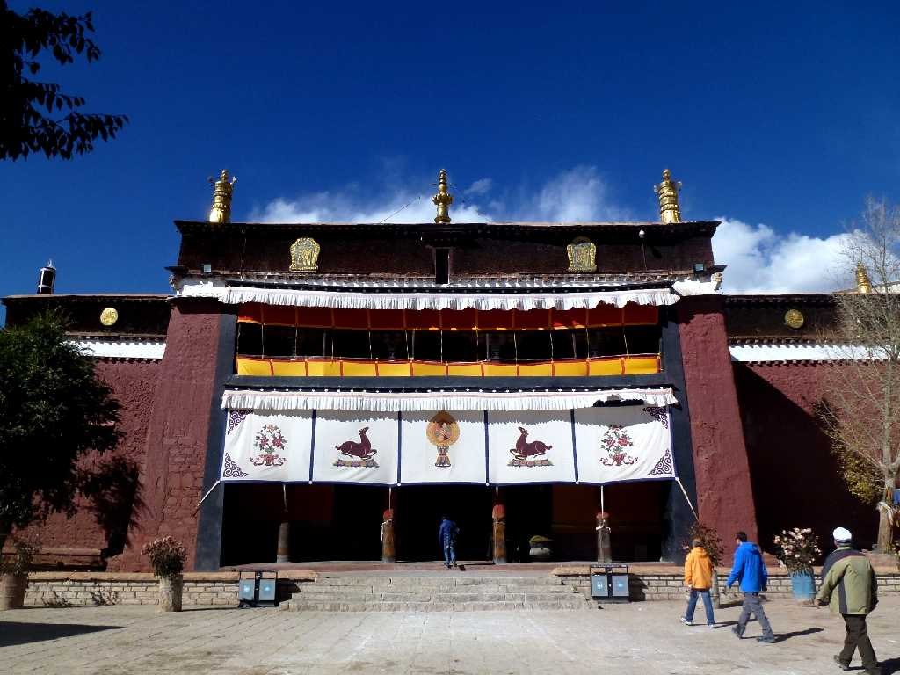
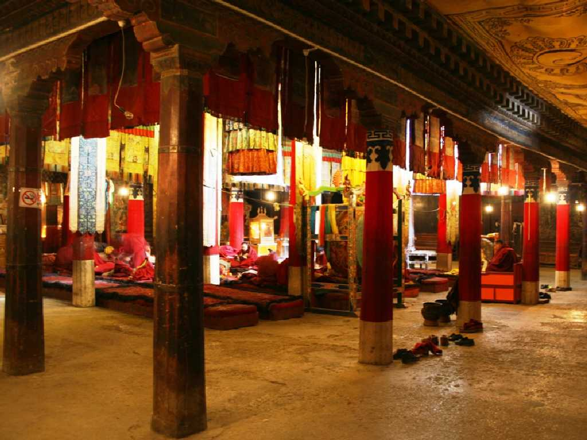
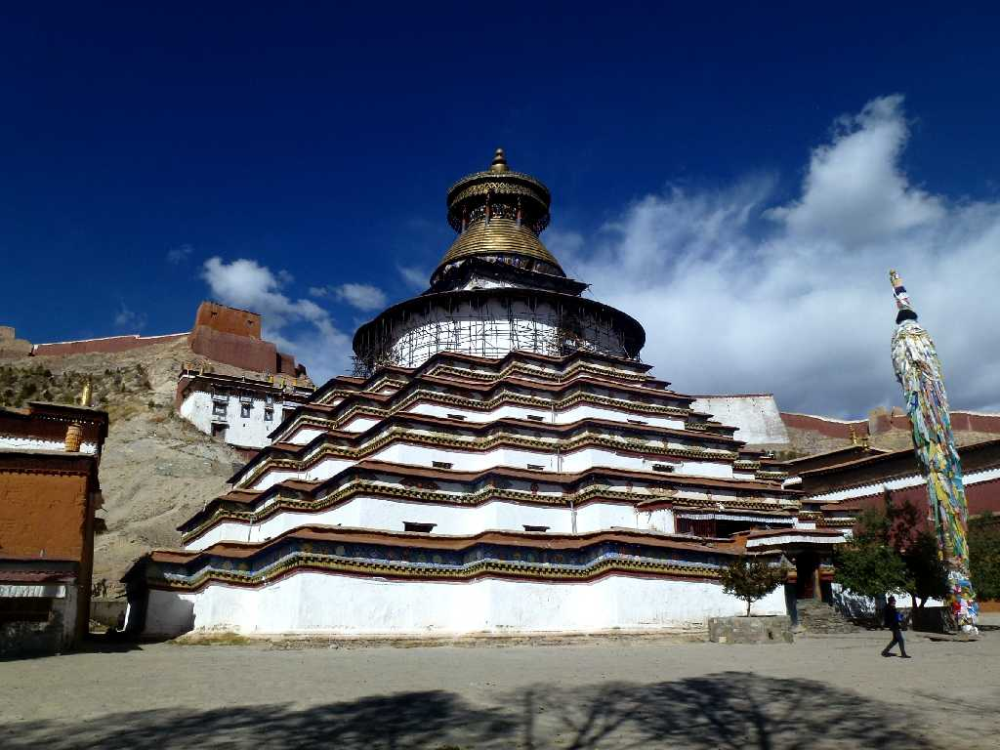
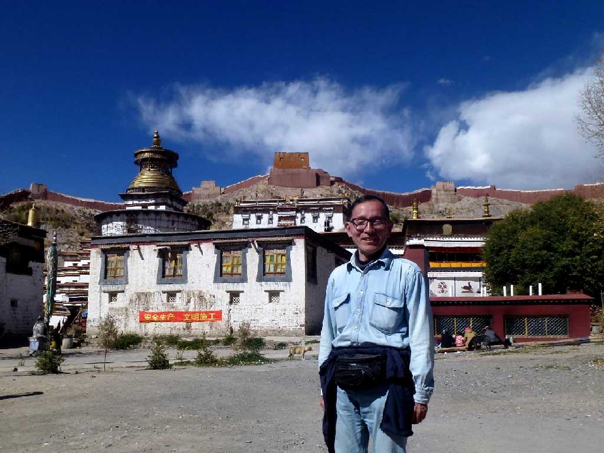

Pelkor Chode Monastry Gyantse Tibet 西藏 江孜 白居寺
ギャンツェ王により１４２５年に創られた白居寺

Pelkor Chode Monastery
チベット語でパンコル・チョデとは吉祥輪大楽寺を意味し特定の宗派に属さない寺院であった

Kumbum Chorten Pelkor Chode Monastry
１４３９年に創られた７７の部屋を持つチベット最大の仏塔
Kumbum Chorten
仏塔内の仏像が１０万体を超えたことから１０万(チベット語でクンブム)仏塔とも云われている

October 22 2014 Pelkor Chode Monastry